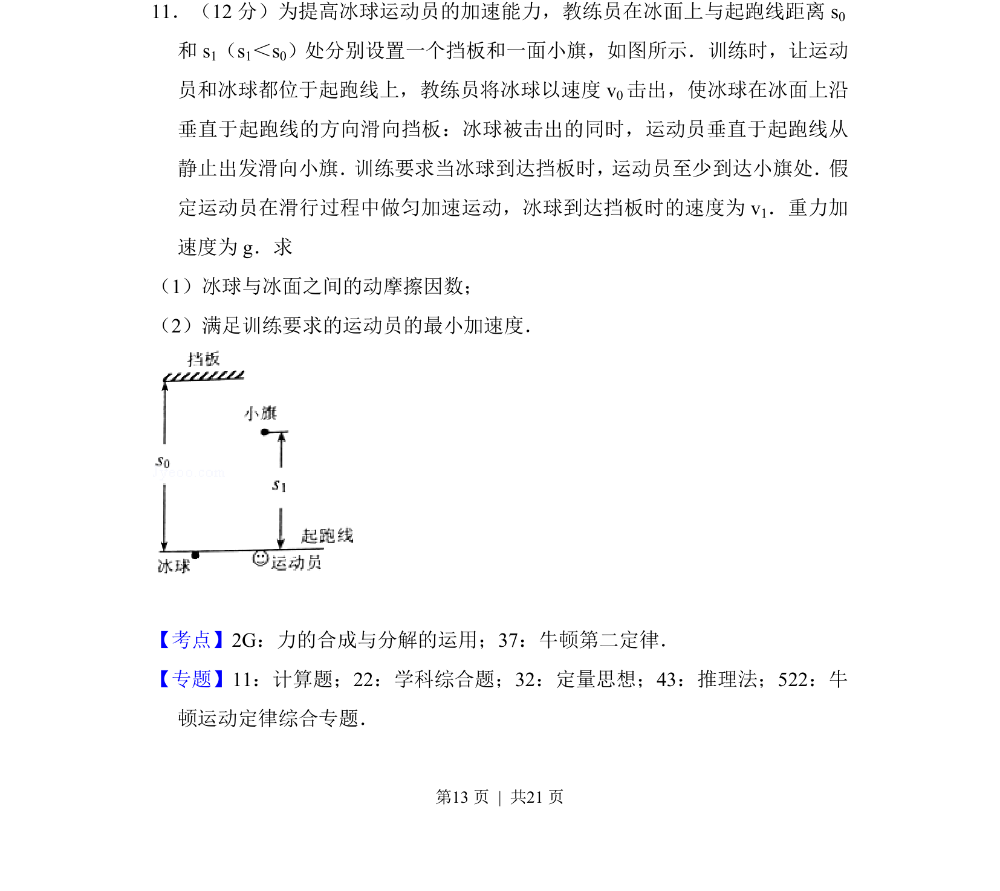
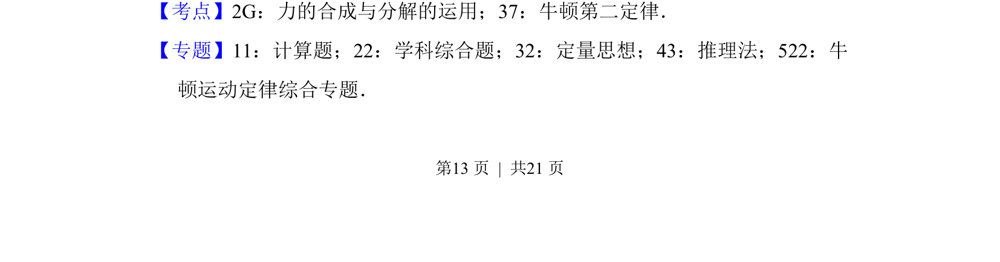
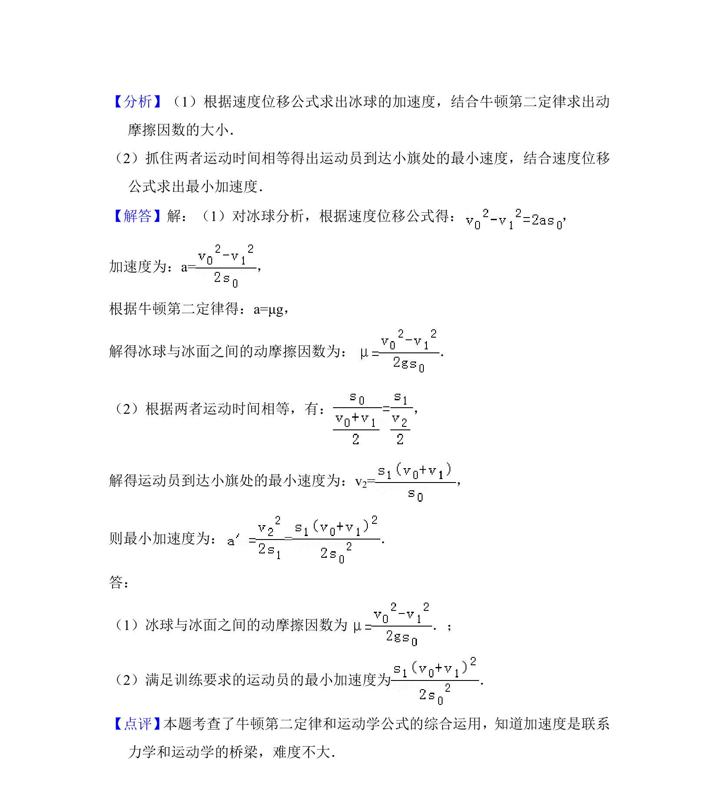

考点：牛顿运动定律 运动学 摩擦力 动力学

冰球运动员从起跑线加速滑行，冰球碰挡板后竖直弹回，综合求冰面动摩擦因数和运动员最小加速度。


📄 原 PDF 第 13 页：
素材/真题/吉林/2008-2024·（吉林）物理高考真题/2017年高考物理试卷（新课标Ⅱ）（解析卷）.pdf
11．（12分）为提高冰球运动员的加速能力，教练员在冰面上与起跑线距离s 0 和s 1（s1＜s0）处分别设置一个挡板和一面小旗，如图所示．训练时，让运动 员和冰球都位于起跑线上，教练员将冰球以速度v 0击出，使冰球在冰面上沿 垂直于起跑线的方向滑向挡板：冰球被击出的同时，运动员垂直于起跑线从 静止出发滑向小旗．训练要求当冰球到达挡板时，运动员至少到达小旗处．假 定运动员在滑行过程中做匀加速运动，冰球到达挡板时的速度为v 1．重力加 速度为g．求 （1）冰球与冰面之间的动摩擦因数； （2）满足训练要求的运动员的最小加速度．
【考点】2G：力的合成与分解的运用；37：牛顿第二定律．菁优网版权所有 【专题】11：计算题；22：学科综合题；32：定量思想；43：推理法；522：牛 顿运动定律综合专题．